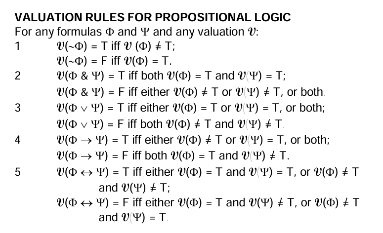
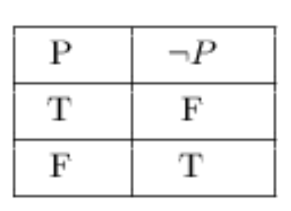
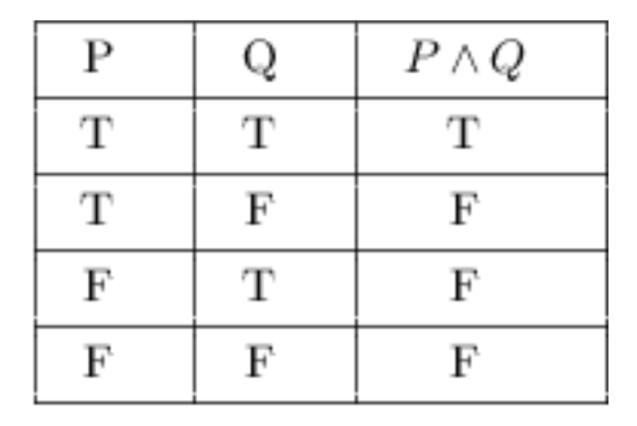
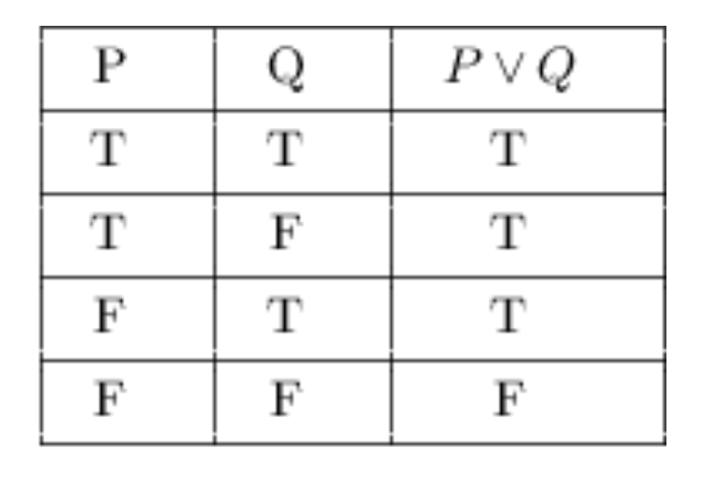
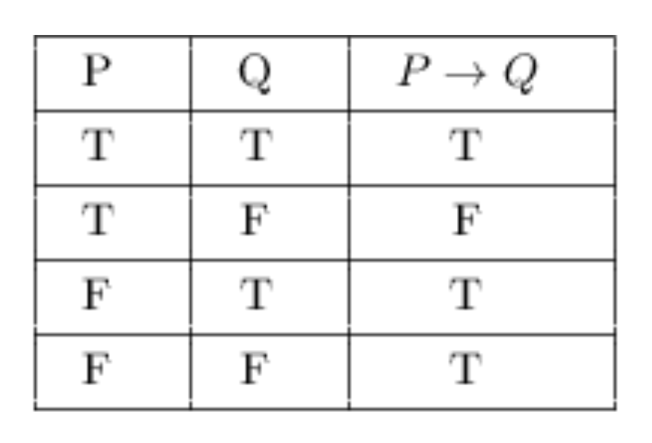
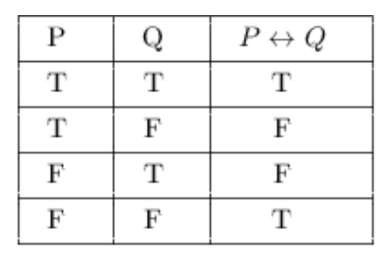

Classical Propositional Logic
Syntax
Last Week, can you guess?
This Week
- Content
- Structure
Syntax
Semantics
Sentences
I was a ghost, I was alone 어두워진 앞길 속에 (hah)
Given the throne, I didn’t know how to believe
I was the queen that I’m meant to be
I lived two lives, tried to play both sides
But I couldn’t find my own place
Called a problem child ’cause I got too wild
But now that’s how I’m getting paid 끝없이 on stage
Classify the following as valid or invalid
What is the conclusion? What are the supporting premises?
I was a ghost, I was alone 어두워진 앞길 속에 (hah) (?)
Is it valid?
Is it sound?
| I was a ghost | I was alone 어두워진 앞길 속에 (hah) | Given the throne I didn’t know how to believe |
|---|---|---|
| True | True | True |
| True | True | False |
| True | False | True |
| True | False | False |
| False | True | True |
| False | True | False |
| False | False | True |
| False | False | False |
Relevance
Logical truth, a statement true in all possible situations.
A set of propositions (or a single proposition) is inconsistent if there is no possible situation in which they are all true (or in which it is true).
Look for logical operators, terms representing logical relationships between propositions, except in the case of negations.
Some are contingent, true in some possible situations but false in others.
Argument Indicators
Words or phrases taht signal the presence of an argument.
Premise Indicators
- since, because, for, as shown by, given that, may be inferred from, follows from, inasmuch as, in view of the fact that, seeing that, for the reason that, etc.
Conclusion Indicators
- therefore, thus, hence, so, consequently, it follows that, we may infer that, entails that, which implies that, accordingly, as a result, etc.
Chapter 2
Classical Propositional Logic: Syntax
In this chapter, we cover syntax, which is its grammar and rules for constructing sentences.
Argument Forms
Informal Logic: Studying arguments as they occur in natural language
Formal Logic: Argument forms
Some Valid Argument Forms
Modus Ponens
P1. P \(\rightarrow\) Q.
P2. P.
C. \(\therefore\) Q.
Modus Tollens
P1. P \(\rightarrow\) Q.
P2. ~Q.
C. \(\therefore\) ~P.
Hypothetical Syllogism
P1. P \(\rightarrow\) Q.
P2. Q \(\rightarrow\) R.
C. P \(\rightarrow\) R
Disjunctive Syllogism
P1. P \(\lor\) Q.
P2. ~P. [or ~Q.]
C. \(\therefore\) Q. [∴ P.]
Constructive Dilemma
P1. P \(\lor\) Q.
P2. P \(\lor\) R.
P3. Q \(\rightarrow\) S.
C. \(\therefore\) R \(\lor\) S
Some Terms from Chapter 2
Turnstile
Sequent
Propositional Logic
Negation Operator
Disjunct
Scope Ambiguity
Automic Formulas
FORMATION RULES FOR PROPOSITIONAL LOGIC
1 Any sentence letter, with or without a sequence of numerals as a subscript, is a formula.
2 If \(\phi\) is a formula, then so is ~\(\phi\).
3 If \(\phi\) and \(\psi\) are formulas, then so are (\(\phi\) & \(\psi\)), (\(\phi\) \(\lor\) \(\psi\)), (\(\phi\) \(\rightarrow\) \(\psi\)) and (\(\phi\) \(\Leftrightarrow\) \(\psi\)).
- ~(P) (~P) (P): These are not formulas!
What is classical logic? What is the principle of bivalence?
DEFINITION: A valuation of a formula or set of formulas of propositional logic is an assigment of one and only one of the truth values T and F to each of the sentence letters occuring in that formula or in any formula of that set.
What are the valuation rules?

Better





Some More Definitions
DEFINITION: A counterexample to a sequent or argument form is a valuation on which its premises are true and its conclusion is not true.
DEFINITION: A sequent or argument form is valid iff there is no valuation on which its premises are true and its conclusion is not true.
DEFINITION: A sequent or argument form is invalid iff there is at least one valuation on which its premises are true and its conclusion is not true.
DEFINITION: A valid formula is a formula true on all its valuations.
DEFINITION: A tautology is a formula whose truth table displays a column consisting entirely of ’T’s under its main operator.
DEFINITION: A formula is inconsistent iff there is no valuation on which it is true.
DEFINITION: A set of formulas is inconsistent iff there is no valuation on which all the formulas in the set are true.
DEFINITION: A formula is consistent iff it is true on at least one valuation.
DEFINITION: A set of formulas is consistent iff there is at least one valuation on which all the formulas in the set are true.
DEFINITION: A formula is contingent iff it is true on some of its valuations and not true on others.
DEFINITION: Two formulas are logically equivalent iff they have the same truth value on every valuation of both.
| Type of formula | Definition | Truth Table Indication |
|---|---|---|
| Valid (Tautologous) | True on all Valutions | Column under main operator contains only ’T’s |
| Contingent | True on at least one valuation | Column under main operator contains both ’T’s and ’F’s |
| Inconsistent | True on no valuations | Column under main operator contains only ’F’s |
| Type of set | Definition | Truth Table Indication | |
|---|---|---|---|
| Consistent | There is at least one valuation on which all formulas in the set are true | There is at least on Horizontal line on which all formulas in the set have ’T’s under their main operators | |
| Inconsistent | There is no valuation on which all formulas in the set are true | There is no horizontal line on which all formulas in the set have ’T’s under their main operators |